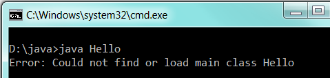
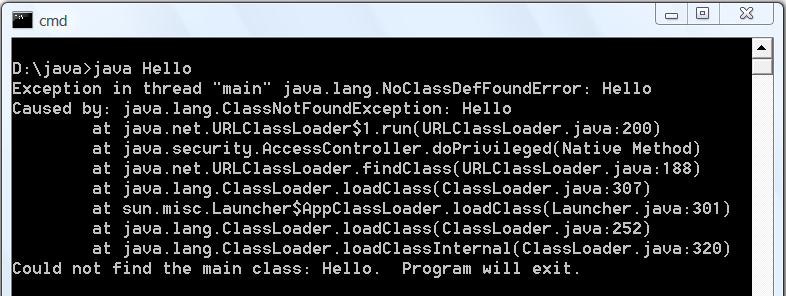
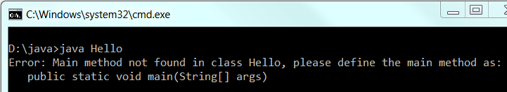

Murphy's Law states that:
- "Anything that can possibly go wrong, does."
- "Everything that can possibly go wrong will go wrong."
- "If anything can go wrong, it will."
- "If there is any way to do it wrong, he will."
When software goes wrong, the MOST IMPORTANT thing to do is to FIND the ERROR MESSAGE, which can give you clues of what went wrong. If things were running fine until the lightning strikes, ask yourself what have you CHANGED!
Search this document with your Error Message; or simple google your error message.
Stack Trace
Most of the times, the error message consists of tens of lines of so-called stack trace of method invocation. That is, method A called method B, which called method C, and so on, until method Z encountered an error and threw an Exception or an Error. It is important to:
- Get to the first line of the error message to read the description, and
- Look for the line number of YOUR PROGEAM that triggered the error.
For example, this error message (stack trace) has 40 over lines:
com.mysql.jdbc.exceptions.jdbc4.CommunicationsException: Communications link failure <== First line with error description The last packet sent successfully to the server was 0 milliseconds ago. The driver has not received any packets from the server. at sun.reflect.NativeConstructorAccessorImpl.newInstance0(Native Method) at sun.reflect.NativeConstructorAccessorImpl.newInstance(NativeConstructorAccessorImpl.java:57) at sun.reflect.DelegatingConstructorAccessorImpl.newInstance(DelegatingConstructorAccessorImpl.java:45) at java.lang.reflect.Constructor.newInstance(Constructor.java:525) at com.mysql.jdbc.Util.handleNewInstance(Util.java:411) at com.mysql.jdbc.SQLError.createCommunicationsException(SQLError.java:1116) at com.mysql.jdbc.MysqlIO.<init>(MysqlIO.java:344) at com.mysql.jdbc.ConnectionImpl.coreConnect(ConnectionImpl.java:2333) at com.mysql.jdbc.ConnectionImpl.connectOneTryOnly(ConnectionImpl.java:2370) at com.mysql.jdbc.ConnectionImpl.createNewIO(ConnectionImpl.java:2154) at com.mysql.jdbc.ConnectionImpl.<init>(ConnectionImpl.java:792) at com.mysql.jdbc.JDBC4Connection.<init>(JDBC4Connection.java:47) at sun.reflect.NativeConstructorAccessorImpl.newInstance0(Native Method) at sun.reflect.NativeConstructorAccessorImpl.newInstance(NativeConstructorAccessorImpl.java:57) at sun.reflect.DelegatingConstructorAccessorImpl.newInstance(DelegatingConstructorAccessorImpl.java:45) at java.lang.reflect.Constructor.newInstance(Constructor.java:525) at com.mysql.jdbc.Util.handleNewInstance(Util.java:411) at com.mysql.jdbc.ConnectionImpl.getInstance(ConnectionImpl.java:381) at com.mysql.jdbc.NonRegisteringDriver.connect(NonRegisteringDriver.java:305) at java.sql.DriverManager.getConnection(DriverManager.java:579) at java.sql.DriverManager.getConnection(DriverManager.java:221) at MySQLJdbcTestJDK7.main(MySQLJdbcTestJDK7.java:7) <== Your program's line number here (line 7) Caused by: java.net.ConnectException: Connection refused: connect <== First line of another related error at java.net.DualStackPlainSocketImpl.connect0(Native Method) at java.net.DualStackPlainSocketImpl.socketConnect(DualStackPlainSocketImpl.java:69) at java.net.AbstractPlainSocketImpl.doConnect(AbstractPlainSocketImpl.java:337) at java.net.AbstractPlainSocketImpl.connectToAddress(AbstractPlainSocketImpl.java:198) at java.net.AbstractPlainSocketImpl.connect(AbstractPlainSocketImpl.java:180) at java.net.PlainSocketImpl.connect(PlainSocketImpl.java:157) at java.net.SocksSocketImpl.connect(SocksSocketImpl.java:391) at java.net.Socket.connect(Socket.java:579) at java.net.Socket.connect(Socket.java:528) at java.net.Socket.<init>(Socket.java:425) at java.net.Socket.<init>(Socket.java:241) at com.mysql.jdbc.StandardSocketFactory.connect(StandardSocketFactory.java:257) at com.mysql.jdbc.MysqlIO.<init>(MysqlIO.java:294) ... 15 more
JDK Common Errors
JDK Installation Errors

SYMPTOM: Cannot compile Java program from the CMD shell (e.g., "javac Hello.java" does not work!) ERROR MESSAGE: 'javac' is not recognized as an internal or external command, operable program or batch file. PROBABLE CAUSES: The PATH environment variable, which maintains a list of search paths for executable programs (including "javac.exe"), does not include JDK's bin directory. POSSIBLE SOLUTIONS: 1) Start a CMD shell (click "Start" button ⇒ "run..." ⇒ enter "cmd") and issue a path command: prompt> path PATH=....... 2) Check if it includes your JDK's "bin" directory. For example, suppose that your JDK is installed in "c:\program files\java\jdk1.7.0", then PATH should include "c:\program files\java\jdk1.7.0\bin". Otherwise, include JDK's bin directory in the PATH environment variable. Read "Step 3 of How to install JDK".
 
SYMPTOM: Can compile but cannot run Java program from the CMD shell (e.g., "java Hello" does not work!) ERROR MESSAGE (JDK 1.7): Error: Could not find or load main class Hello ERROR MESSAGE (Pre JDK 1.7): Exception in thread "main" java.lang.NoClassDefFoundError: Hello PROBABLE CAUSES: 1) The Java class (in this example, Hello.class) is NOT in the current directory. 2) The CLASSPATH environment variable is set, but does not include the current directory ".". POSSIBLE SOLUTIONS: 1) Issue a "dir" command to list the contents of the current directory. Check that it contains the Java class to be run (e.g., Hello.class). You need to compile the source program (".java") to get the class file (".class"). 2) If the Java class is present in the current directory, issue a "set classpath" command to check its settings: prompt> set classpath CLASSPATH=....... If you receive the message "Environment variable CLASSPATH not defined" and your program is correct, I can't help you here. Otherwise, if the CLASSPATH is defined, for beginner, I suggest that you remove the CLASSPATH environment variable. From "Control Panel" ⇒ System ⇒ (Vista only) Advanced system settings ⇒ Switch to "Advanced" tab ⇒ Environment Variables ⇒ System variables (and also User variables) ⇒ Select variable "CLASSPATH" ⇒ Delete (Delete from both the System variables and User variables) 3) (For Advanced Users Only) If CLASSPATH is not set, it is defaulted to the current directory. However, if CLASSPATH is set, the current directory is NOT implicitly included. You can include the current directory (denoted by a single dot ".") in front of the existing class-paths. Read "Java Applications and Environment Variable" for more discussion on CLASSPATH.

SYMPTOM: Can compile but cannot run the Hello-world program (e.g., "java Hello" does not work!)
ERROR MESSAGE (JDK 1.7): Error: Main method not found in class Hello.
POSSIBLE SOLUTIONS: Check whether there is a main() method in your program, and the signature of your main()
as shown in the error message.
SYMPTOM: Cannot compile Java program ERROR MESSAGE (JDK 1.7): Could not find or load main class com.sun.tools.javac.Main POSSIBLE SOLUTIONS: You did not install JDK and JRE correctly. If you are a novice, re-install JDK (Read "How to install JDK" again) 1. Un-install JDK and JRE (via control panel ⇒ "Program and Features"...) 2. Download the JDK (with JRE) and re-install. Use the default directories for JDK and JRE. That is, simply click Simply click "next"..."next"... to install JDK in "C:\Program Files\java\jdk1.7.0_0x" and JRE in "C:\Program Files\java\jre7". DO NOT change the installed directories! 3. Update the PATH environment variable.
SYMPTOM: Cannot run the downloaded JDK Installer. Double-click the installer but nothing happens! POSSIBLE SOLUTIONS: There seems to be a bug in JDK 1.7 u2 onwards, that affects only some computers. Download and install JDK 1.7 u1 or below.
Java Native Library (JNI) Errors
ERROR MESSAGE: SEVERE: java.lang.UnsatisfiedLinkError: no xxx in java.library.path
PROBABLE CAUSES: Your program uses a native library from a 3rd-party API (such as JOGL),
which cannot be located in the native library search paths.
POSSIBLE SOLUTION:
A Java Native Library (JNI) contains non-Java library codes (in filetype of ".dll" in Windows, ".so" in Linux,
".jnilib" in MacOS). For example, JOGL's "jogl_xxx.dll", "gluegen-rt.dll".
These dll's are needed for proper operations.
The directory path of native libraries must be included in Java system's property "java.library.path".
The "java.library.path" usually mirrors the Envrionment Variable PATH. You can list the entries by issuing:
System.out.println(System.getProperty("java.library.path"));
To include a directory in "java.library.path", you can use VM command-line option -Djava.library.path=pathname
For JRE:
> java -Djava.library.path=d:\bin\jogl2.0\lib myjoglapp
For Eclipse, the VM command-line option can be set in "Run Configuration..." ⇒ "Arguments" ⇒ "VM Arguments".
Alternatively, you can create a User library and specifying the native library (Refer to "Eclipse How-To")
For NetBeans, the VM command-line option can be set in "Set Configuration" ⇒ "Customize..." ⇒ "Run" ⇒ "VM options".
MySQL Installation Common Errors
Starting the MySQL Server after Installation
First of all, check if you have already started an instance of MySQL Server:
- For Windows, start the "Task Manager", select "Processes" and look for "
mysqld" processes. "End" all the "mysqld" processes. - For Mac, start the "Activity Monitor", select "All Processes" and look for "
mysqld" processes. "Kill" all the "mysqld" processes. - For Ubuntu, start the "System Monitor" and look for "
mysqld" processes. "Kill" all the "mysqld" processes.
SYMPTOM: Cannot start MySQL server after installation
ERROR MESSAGE: [ERROR] Can't find message file 'x:\xxxxx\share\english\errmsg.sys'
PROBABLE CAUSES: Error in "basedir" option in the configuration file "my.ini".
POSSIBLE SOLUTIONS:
1. Take note of your MySQL installed directory, e.g., d:\myproject\mysql.
2. Goto the MySQL installed directory, and check if "my.ini" (for Windows) or "my.cnf" (for Mac and Ubuntu) exists.
3. For Windows, if you use NotePad, ensure that you save the configuration file as "my.ini", instead of "my.ini.txt".
"my.ini.txt" has file type of "Text Document". "my.ini" has file type of "Configuration Settings".
"Save As..." the file again by enclosing the filename "my.ini" with a pair of double quotes.
4. Check the "basedir" and "datadir" options in "my.ini". Make sure that that path corresponds to your
MySQL installed directory. Use Unix-style forward slash '/' as the directory separator, instead of
Windows-style back slash '\'.
SYMPTOM: Cannot start MySQL server after installation ERROR MESSAGE: [ERROR] Can't open the mysql.plugin table. Please run mysql_upgrade to create it. ......... [ERROR] Fatal error: Can't open and lock privilege tables: Table 'mysql.host' doesn't exist PROBABLE CAUSES: Error in "datadir" option in the configuration file "my.ini". POSSIBLE SOLUTIONS: Check that "datadir" selects the "data" sub-directory of your MySQL installed directory, e.g., datadir=d:/myproject/mysql/data
SYMPTOM: MySQL Server runs on TCP port 3306 (the MySQL default port number) instead of 8888 that was configured.
PROBABLE CAUSES: MySQL Server was not started with your customized "my.ini".
POSSIBLE SOLUTIONS:
1. Take note of your MySQL installed directory, e.g., d:\myproject\mysql.
2. Goto the MySQL installed directory, and check if "my.ini" exists.
SYMPTOM: Cannot start MySQL server. ERROR MESSAGE: InnoDB: Operating system error number 32 in a file operation. InnoDB: The error means that another program is using InnoDB's files. InnoDB: This might be a backup or antivirus software or another instance of MySQL. InnoDB: Please close it to get rid of this error. PROBABLE CAUSES: You have already started an instance of MySQL. POSSIBLE SOLUTIONS: Shutdown the previously-started MySQL. You may use "Task Manager" to cancel the "process" called "mysqld". [The proper way is to use "mysqladmin" to do a normal shutdown.]
Starting the "mysql" Client
SYMPTOM: Cannot start mysql client
ERROR MESSAGE: ERROR 2003 (HY000): Can't connect to MySQL server on 'localhost' (10061)
PROBABLE CAUSES:
1. MySQL Server is NOT started, or
2. The client was connecting to the wrong port number
POSSIBLE SOLUTIONS:
1. Check to make sure that the MySQL server has been started.
Note down the server's port number from the server's console.
2. Check "my.ini", make sure that you have a [client] section with port=xxxx.
3. Run a client with command "mysql -u root --port=xxxx" to specify the server's port number manually.
SYMPTOM: Cannot start mysql client
ERROR MESSAGE: error 2005 (hy000) unknown mysql server host 'localhost' (2)
PROBABLE CAUSES:
Somehow your localhost is not bind to 127.0.0.1
POSSIBLE SOLUTIONS:
1. Try "ping localhost" to check if "localhost" exists.
2. If not, check "C:\Windows\System32\drivers\etc\hosts" file. There should be an entry:
127.0.0.1 localhost
Remove all the other localhost entries, if any.
Using the "mysql" Client
ERROR MESSAGE: ERROR 1046 (3D000): No database selected PROBABLE CAUSES: The default database is not set POSSIBLE SOLUTIONS: 1) Issue command "use database" to set the default database, or 2) Use the fully-qualified name in the form of "databaseName.tableName". ERROR MESSAGE: ERROR 1005 (HY000): Can't create table '....' (errno: 150) PROBABLE CAUSES: A foreign key references a parent table's column which is not indexed. Create index for that column in the parent table.
Tomcat Installation Common Errors
Starting Tomcat after Installation
SYMPTOM: Cannot start Tomcat after installation. The Tomcat console flashed and disappeared.
POSSIBLE SOLUTIONS:
1. Run the script "configtest.bat" (for Windows) or "./configtest.sh" (for Mac/Linux) to check
configuration files ("server.xml", "web.xml", "content.xml").
2. Check the Tomcat's log files, located at "<TOMCAT_HOME>\logs".
The "catalina.{yyyy-mm-dd}.log" shows the Tomcat's startup messages.
3. Start the tomcat in the debugging mode by running "catalina debug" (or ./catalina.sh debug) and
type "run" in the "jdb" prompt. Look for the error messages.
4. Check if you have already started a copy of Tomcat.
For Windows, start Task Manager, Tomcat run as a "process" named "java.exe". Kill it.
For Mac/Linux, issue "ps -ef | grep tomcat" to locate the Tomcat process.
Note the process ID (pid), and kill the process via "kill -9 pid".
5. Check the JDK Extension directory, remove the out-dated "servlet-api.jar", if any.
SYMPTOM: Cannot start Tomcat
ERROR MESSAGE:
SEVERE: StandardServer.await: create[localhost:8005]
java.net.BindException: Address already in use: JVM_Bind
POSSIBLE SOLUTIONS:
1. Another Tomcat instance has been started. Kill it.
For Windows, start Task Manager, Tomcat run as a "process" named "java.exe". Kill it.
For Mac/Linux, issue "ps -ef | grep tomcat" to locate the Tomcat process.
Note the process ID (pid), and kill the process via "kill -9 pid".
2. Another application is running on the Tomcat's port number.
Change the Tomcat's port number in "server.xml".
You can issue command "netstat -an" to check the status of all the ports.
SYMPTOM: Cannot start Tomcat after installation ERROR MESSAGE: 1. Neither the JAVA_HOME nor the JRE_HOME environment variable is defined At least one of these environment variable is needed to run this program 2. JRE_HOME environment variable is not defined POSSIBLE SOLUTIONS: 1. Check if JAVA_HOME is properly defined, via command "set JAVA_HOME" (for Windows) or "echo $JAVA_HOME" (for Mac/Linux). Check the spelling carefully. 2. Define environment variable JAVA_HOME according to "Step 2: Create an Environment Variable JAVA_HOME".
SYMPTOM: Cannoat start Tomcat start after installation ERROR MESSAGE: java.lang.NoSuchMethodError: javax.servlet.ServletContext.getSessionCookieConfig() Ljavax/servlet/SessionCookieConfig; PROBABLE CAUSES: This is a new method in Servlets 3.0 (which Tomcat 7 supports). There is a Servlets 2.x API is your CLASSPATH or JDK's extension directory. POSSIBLE SOLUTIONS: Check your CLASSPATH. Remove servlet-api.jar from JDK's extension directory if any.
Accessing Tomcat Server
Common Error Messages:
- (Firefox) Unable to Connect; (IE) Internet Explorer cannot display the webpage; (Chrome) Oops! Google Chrome could not connect to xxxx.
- Error 404 File Not Found.
- Error 500 Internal Server Error.
- Error 505: GET (or POST) method not supported: Check you servlet to make sure that you have defined a
doGet()(ordoPost()) method.
Read "How to debug" section of "How to install Tomcat".
JDBC Programming Common Errors
JDBC on MySQL
SYMPTOM: Can compile the JDBC program but Runtime Error ERROR MESSAGE: (Windows) No suitable driver found (Mac/Linux) NullPointerException PROBABLE CAUSES: MySQL JDBC Driver Connector/J was NOT (properly) installed. POSSIBLE SOLUTION: 1. Read "Install MySQL JDBC Driver" again, again and again... 2. Make sure that you copy the driver to the JDK's Extension directory. 3. You may the following command to run your JDBC program: > java -cp .;path-to\mysql-connector-java-5.1.xx-bin.jar JdbcClassName 4. For Tomcat, you may place the driver JAR-file in Tomcat's "lib" directory.
SYMPTOM: Can compile the JDBC program but Runtime Error
ERROR MESSAGE: com.mysql.jdbc.exceptions.jdbc4.CommunicationsException:
Communications link failure
PROBABLE CAUSES:
1. MySQL Server is NOT started, or
2. The program was connecting to a wrong TCP port number or wrong hostname (or IP address)
in your database-URL jdbc:mysql://localhost:port/studentdb.
POSSIBLE SOLUTION:
1. Make sure that server has been started. Note down the server's port number
from the server's console.
2. Check the database-URL's hostname and port number: jdbc:mysql://localhost:port/studentdb
3. Run a MySQL client, issue command "status" to confirm the server's TCP port number.
4. Run a mysql client, use "mysql -u root -p --port=xxxx" to specify the port number to
confirm the server's port number.
SYMPTOM: Can compile the JDBC program but Runtime Error
ERROR MESSAGE: java.sql.SQLException: Access denied for user 'username'@'localhost'
(using password: YES)
PROBABLE CAUSES: Wrong username or password in statement:
DriverManager.getConnection(databaseURL, username, password).
POSSIBLE SOLUTION: Obvious!
SYMPTOM: Can compile the JDBC program but Runtime Error ERROR MESSAGE: com.mysql.jdbc.exceptions.jdbc4.MySQLSyntaxErrorException: Unknown database 'xxxx' PROBABLE CAUSES: DriverManager.getConnection("jdbc:mysql://localhost:8888/xxxx", user, password) specifies a database that does not exist in the server. POSSIBLE SOLUTION: Create the database using a client, before running the Java program.
SYMPTOM: Can compile the JDBC program but Runtime Error
ERROR MESSAGE: com.mysql.jdbc.exceptions.jdbc4.MySQLSyntaxErrorException:
Table 'xxxx.xxxx' doesn't exist
PROBABLE CAUSES: The SQL statement references a non-existence table.
POSSIBLE SOLUTION: Check your SQL statement and the database tables.
SYMPTOM: Can compile the JDBC program but Runtime Error
ERROR MESSAGE: java.sql.SQLException: Column 'xxx' not found.
PROBABLE CAUSES: The method ResultSet.getXxx(columnName) cannot locate
the requested columnName in the ResultSet.
POSSIBLE SOLUTION: Make sure that the column 'xxx' is included in the SELECT statement,
so that it is included in the ResultSet.
SYMPTOM: Can compile the JDBC program but Runtime Error
ERROR MESSAGE: com.mysql.jdbc.exceptions.jdbc4.MySQLSyntaxErrorException:
You have an error in your SQL syntax; check the manual that corresponds to
your MySQL server version for the right syntax to use near .... at line x
PROBABLE CAUSES: Syntax error in your SQL statement.
POSSIBLE SOLUTION: Obvious!
SYMPTOM: Logical error in comparing floating point numbers for equality.
For example, "SELECT * FROM class101 WHERE gpa = 4.4"
yields empty set although there is a record with gpa=4.4.
PROBABLE CAUSES:
"gpa" has the type of FLOAT.
Floating point numbers are not stored "accurately".
POSSIBLE SOLUTION:
Do not compare two floating point number for equality.
Instead, specify a range, e.g., "gpa > 3.9 AND gpa < 4.1"
SYMPTOM (NetBeans): I got this strange error running JDBC program on NetBeans.
ERROR MESSAGE:
The DriverManager.getConnection() method throws:
com.mysql.jdbc.exceptions.jdbc4.MySQLSyntaxErrorException: You have an error
in your SQL syntax; check the manual that corresponds to your MySQL server
version for the right syntax to use near '??' at line 1
POSSIBLE SOLUTION:
The NetBeans project was using "UTF-16" as the default charset. Hence, it communicates
with MySQL server using "UTF-16" character set.
The problem solved by setting the default charset to an ASCII compatible charset
such as "Latin-1" or "UTF-8" (Right-click on the project ⇒ Properties ⇒ Encoding)
JDBC on MS Access
SYMPTOM (Access 2007): Can compile the JDBC program but Runtime Error ERROR MESSAGE: java.sql.SQLException: [Microsoft][ODBC Driver Manager] Data source name not found and no default driver specified. PROBABLE CAUSES: No such Data Source (ODBC) name in method DriverManager.getConnection("jdbc:odbc:ODBCName"); POSSIBLE SOLUTION: Check your ODBC configuration (under control panel ⇒ ODBC).
SYMPTOM (Access 2007): Can compile the JDBC program but Runtime Error ERROR MESSAGE: java.sql.SQLException: [Microsoft][ODBC Driver Manager] No data found PROBABLE CAUSES: The ODBCName in method DriverManager.getConnection("jdbc:odbc:ODBCName") does not SELECT a database. POSSIBLE SOLUTION: Check your ODBC configuration (under control panel ⇒ ODBC).
SYMPTOM (Access 2007): Can compile the JDBC program but Runtime Error
ERROR MESSAGE: java.sql.SQLException: [Microsoft][ODBC Microsoft Access Driver]
The Microsoft Office Access database engine cannot find the input table or query 'xxx'.
Make sure it exists and that its name is spelled correctly.
PROBABLE CAUSES: The SQL statement references a non-existence table.
POSSIBLE SOLUTION: Check your SQL statement and the database tables.
SYMPTOM (Access 2007): Can compile the JDBC program but Runtime Error
ERROR MESSAGE: java.sql.SQLException: Column not found.
PROBABLE CAUSES: The method ResultSet.getXxx(columnName) cannot locate
the requested columnName in the ResultSet.
POSSIBLE SOLUTION: Make sure that the column is included in the SELECT statement,
so that it is included in the ResultSet.
SYMPTOM (Access 2007): Can compile the JDBC program but Runtime Error ERROR MESSAGE: [Microsoft][ODBC Microsoft Access Driver] Syntax error in FROM clause. [Microsoft][ODBC Microsoft Access Driver] Too few parameters. .... PROBABLE CAUSES: Syntax error in the SQL statement. POSSIBLE SOLUTION: Obvious!
SYMPTOM (Access 2007): Can compile the JDBC program but Runtime Error
ERROR MESSAGE:
[Microsoft][ODBC Microsoft Access Driver] SQL General Error.
PROBABLE CAUSES: This message is not clear, but most likly caused by inserting a record
with duplicate primary key.
SYMPTOM (Access 2007): Can compile the JDBC program but Runtime Error
ERROR MESSAGE:
[Microsoft][ODBC Microsoft Access Driver] The number of fields are not the same as the ....
PROBABLE CAUSES: In the INSERT INTO tableName VALUES (...), you should have the same number
of values as the number of columns.
Java Servlet Common Errors
SYMPTOM: Cannot compile Java Servlet
ERROR MESSAGE:
class xxxx is public, should be declared in a file named xxxx.java
CAUSES/SOLUTION:
In Java, the filename must be the same as the classname with extension of ".java".
For example, the class "HelloServlet" must be saved as "HelloServlet.java" - case-sensitive!
SYMPTOM: Cannot compile Java Servlet ERROR MESSAGE: package javax.servlet does not exist CAUSES/SOLUTION: The Java Servlet library is missing. Read "Step 6(a) Install Servlet API Library" again, again and again....
NetBeans Common Errors
SYMPTOM: Cannot display chinese characters and other Unicode characters in the NetBeans editor
ERROR MESSAGE: Chinese characters displayed as boxes or question marks in the NetBeans editor
CAUSES/SOLUTION:
1. Check the character set. Right-click on the project ⇒ Property ⇒ "Source" node
⇒ "Encoding" ⇒ Choose "UTF-8" or the desired Unicode charater sets.
2. You also need to choose a font type that displays chinese or Unicode characters,
such as "Monospace".
In "Tools" menu ⇒ Options ⇒ Fonts & Colors ⇒ Syntax ⇒ default.
If one font does not work, try another.
C++ with GCC Compiler
SYMPTOM: Cannot compile ERROR MESSAGE: error: 'string' does not name a type CAUSES/SOLUTION: missing "using namespace std;" SYMPTOM: Cannot compile ERROR MESSAGE: error: iostream: No such file or directory CAUSES/SOLUTION: The file is incorrectly saved as ".c" instead of ".cpp"